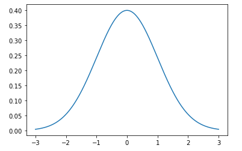
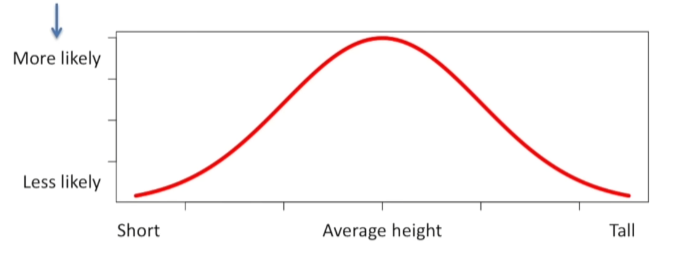

신뢰 구간(Confidence Interval)
이전 섹션에서, 무작위로 선택한 직원 30명의 샘플 데이터를 사용하여 선형 방정식의 기울기(Coefficient)와 절편(Intercept) 값을 구할 수 있었습니다.
\[ 절편=25792.20 \] \[ 기울기=9449.96 \] \[ 급여=9449.96(경력)+25792.20+ε \]
하지만 여기서 또 다른 질문이 생깁니다:
- 급여는 정말로 직원의 경력과 관련이 있을까요?
- 두 변수 간의 관계가 실제로 연관성이 있다고 주장할 만큼 강한가요?
- 무작위로 선택한 직원 30명의 데이터만으로 이를 판단하기에 충분할까요?
- 이 값들이 정말로 올바른 지 어떻게 확인할 수 있을까요?
여러분은 훨씬 더 많은 직원들로 구성된 데이터에서 작은 샘플을 추출해 값을 계산했다는 것을 기억해야 합니다. 하나의 샘플만 사용했기 때문에, 기울기와 계수 값에는 불확실성이 더 클 수 있습니다. 그렇다면 이 값들이 올바른 지 확인하려면 무엇을 해야 할까요?
연습 문제 1: 더 많은 샘플 확인하기
회사 내 직원들의 데이터 10,000건 이상을 찾았다고 가정해 봅시다. 이는 매우 훌륭한 일입니다. 머신러닝에서는 데이터가 많을수록 더 나은 결과를 얻을 수 있으니까요. 이제 이 데이터셋에서 30개의 무작위 샘플을 추출하여, 원래 샘플에서 계산한 절편과 기울기 값과 비교해 보겠습니다. 아래 Replit 창에서 코드를 원하는 만큼 실행해 보세요. 실행할 때마다 절편과 기울기 값이 이전에 계산한 값과 비슷하면서도 조금씩 다르다는 것을 알 수 있을 겁니다. 왜 이런 일이 발생할까요?
왜 실행할 때마다 절편과 기울기 값이 조금씩 다를까요? 왜 원래 샘플의 선(녹색 선)이 새로운 샘플의 선(파란색 선)과 비슷하면서도 다른걸까요?
절편(Intercept)과 기울기(Coefficient) 값이 정말로 우리가 가진 데이터를 대표한다고 확신할 수 있을까요?
신뢰 구간
이전 예제에서 배운 점은, 더 큰 데이터셋에서 무작위 샘플을 사용할 때 절편과 기울기 값이 특정 범위 안에 들어간다는 것입니다. 우리는 실제 값이 절편과 기울기 값 사이에 있어야 한다는 것을 알지만, 그 범위가 무엇인지는 모릅니다. 이 범위를 신뢰 구간confidence interval 이라고 부릅니다.
연습 문제 1 의 코드를 여러 번 실행해 보면 기울기 값이 매번 조금씩 바뀌지만, 거의 항상 9000 미만으로 떨어지거나 10,000을 초과하지는 않는 것을 알 수 있습니다. 그렇다면, 여러 번 실행했을 때 가능한 모든 기울기 값의 차이는 무엇일까요? 이 차이를 표준 오류(Standard Error) 라고 부릅니다.
표준 오류(Standard Error) : 표준 오류는 값이 회귀선(Regression Line)으로부터 얼마나 떨어져 있는 지의 평균 거리를 나타냅니다.
예제 2: 표준 오류(Standard Error) 구하기
StatsModels 라이브러리를 사용하면 선형 회귀에서 다양한 값을 얻을 수 있습니다. 아래 Replit 창에서 코드를 실행하면 다음과 같은 출력이 나타날 것입니다:
 |
|---|
| StatsModels 실행 요약 |
표에서 표준 오류 값에 주목해 봅시다. 이 값은 stderr로 표시되어 있으며, 이번 경우에는 409.40입니다. 이 값은 무작위로 선택한 샘플 집합에서 직선의 기울기(coefficient 또는 slope)가 409.40만큼 변할 수 있다는 것을 의미합니다. 다시 말해, “직원의 급여는 $409.40 정도의 오차가 발생할 수 있다” 는 뜻입니다.
예제 3: 정규 분포(The Normal Distribution)
잠시 돌아가서, 연습 문제 2에서 구한 기울기(cofficient 또는 slope)가 다른 샘플을 사용할 때도 반복될 가능성이 얼마나 될지 생각해 봅시다. 머신 러닝에서는 우리가 얻은 값을 결정하기 위해 통계(statistics)를 많이 활용합니다. 통계의 세계에서는 특정 값이 데이터에서 나타날 가능성을 측정하는 데 사용되는 그래프가 있습니다. 이를 정규 분포(Normal Distribution) 또는 종 모양 곡선(Bell Curve)이라고 부르며, 대략 다음과 같이 생겼습니다:
|  |
|---|
| [그림 #]: 정규 분포 또는 종 모양 곡선 |
다음 예를 들어 보겠습니다.
- 아주 키가 작은 사람을 볼 가능성은 얼마나 될까요?
- 아주 키가 큰 사람을 볼 가능성은 얼마나 될까요?
이 관계를 종 모양 곡선(Bell Curve)으로 표현하면, 아래와 같은 그래프를 얻을 수 있습니다:
|  |
|---|
| [그림 #]: 정규 분포(Bell Curve)와 사람들의 키. |
보다시피, 아주 키가 작은 사람이나 아주 키가 큰 사람을 볼 가능성은 매우 낮습니다. 하지만 평균 키를 가진 사람을 보는 것은 꽤 일반적입니다. 물론, 이러한 분포는 국가에 따라 다를 수 있지만, 개념은 이와 같습니다. Replit에서 코드를 실행하면 생성된 히스토그램 이 종 모양 곡선(Bell Curve)과 비슷하다는 것을 볼 수 있습니다. 이 프로그램은 데이터셋에서 특정 값이 얼마나 자주 나타나는지를 보여주는 히스토그램을 생성합니다. 즉, 같은 급여를 받는 직원이 여러 명 있다는 것을 의미합니다.
이 경우, 우리는 표준 오류(Standard Error)와 다음 공식을 사용하여 말할 수 있습니다: “기울기(coefficient)의 값이 이 범위 안에 있을 가능성이 95%입니다.” 그렇다면 이 범위는 무엇일까요? 이 범위가 바로 신뢰 구간(Confidence Interval)입니다.
\[ CoefficientRange = Coefficient \pm2 * (StdError) \]
표준 오류(Standard Error)가 409.40이라는 것을 알고 있으니, 이를 사용해 기울기의 범위를 다음과 같이 계산할 수 있습니다:
\[ 표준오류 = 409.40 \] \[ 기울기 = 9449.96 \] \[ CoefficientRange = Coefficient \pm 2 * StdError \] \[ CoefficientRange = 9449.96 \pm 2 * StdError \] \[ CoefficientRange = [8,631.16, 10,268.76] \]
위에서 계산한 기울기(Coefficient) 범위는 다음을 의미합니다:
- “기울기 값은 8,631.16에서 10,268.76 사이에 있을 것입니다.”
- “직원의 1년당 급여 증가액은 8,631.16달러에서 10,268.76달러 사이입니다.”
아래 코드에서는 무작위로 100명의 직원을 샘플링하여 히스토그램을 생성하고, 이 히스토그램이 종 모양 곡선(Bell Curve)과 얼마나 유사한지 보여줍니다. 결과를 보면, 값이 기울기 범위(8,631.16에서 10,268.76)를 벗어나지 않는 것을 확인할 수 있습니다.